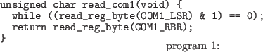

リスト 1 は、最も単純に実装した場合のシリアル ポートの受信処理のコードです。解説を単純化する ため、初期化処理や割り込みの処理などは割愛して います。シリアルポートからデータを受信するに は、Line Status RegisterのData Availableビットを チェックしてデータが着信するまで待ちます。そし て、データが着信したら Receiver Buffer Register から読み取ります。 複数バイトのデータを読み出すには、バイト数分 この処理を繰り返す必要があります。ここではLine Status Registerのチェック処理をビジーウェイトで 実装していますが、実際のドライバではビジーウェ イトはCPU時間を無駄に消費し、他の処理の実行を 阻害するのでほとんどの場合使いません。代わりに 割り込みを用います。シリアルポートの受信割り込 みの場合、Data Availableビットが立つタイミングで 割り込みを発生することができます。このため、ド ライバは割り込みハンドラでリスト1と同様のコー ドを実行すれば、ビジーウェイトを避けて受信処理 を行うことができます。